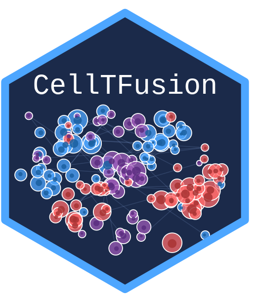

Statistical analysis
a4_statistical_analysis.Rmd
library(CellTFusion)
#> This tutorial shows how to test associations between
CellTFusion features — latent factors, TF modules or cell
groups — and clinical variables. It uses the result of
CellTFusion():
raw.counts <- CellTFusion::raw.counts.tuto
traitdata <- CellTFusion::traitdata.tuto
res <- CellTFusion(
raw.counts = raw.counts,
normalized = TRUE,
cancer_type = "skcm",
return = TRUE
)Latent factors and clinical traits
scores.stat.analysis() tests each latent factor against
a clinical variable and saves a plot for every significant association
in Results/. scores can be the output of
compute.latent_factors() (res$Latent_spaces),
a samples x features matrix, or a list whose first element is that
matrix (e.g. res$Cell_groups). The rows must be in the same
order as the rows of coldata.
Available tests (method):
-
"wilcox"— Wilcoxon rank-sum test (two groups). -
"ttest"— Student’s t-test (two groups). -
"kruskal"— Kruskal-Wallis test with Dunn post-hoc tests (two or more groups). -
"anova"— one-way ANOVA with Tukey post-hoc tests (two or more groups). -
"fisher"— Fisher’s exact test, with scores split at the median into High/Low.
sig_factors <- scores.stat.analysis(
scores = res$Latent_spaces,
coldata = traitdata,
trait = "Best.Confirmed.Overall.Response",
method = "wilcox",
pval = 0.05
)The result keeps only the significant features (NULL if
none). The individual tests (scores.wilcox.test(),
scores.ttest(), scores.kruskal.test(),
scores.anova.test(), scores.fisher.test()) can
also be called directly with a list whose first element is the score
matrix.
The factor scores themselves are in
res$Latent_spaces$Z:
factor_scores <- data.frame(res$Latent_spaces$Z)
head(factor_scores)TF modules and clinical traits
compute.metadata.association() relates TF module scores
to all clinical variables at once:
-
Numeric traits are correlated with each module
(Pearson by default,
corr_method = "s"for Spearman) and shown in a heatmap, annotated for p-values belowpval. For traits with missing values, each p-value uses the number of samples with both values. -
Categorical traits are tested with one-way ANOVA
and Tukey post-hoc tests when
plot_grid = TRUE, and saved as boxplot grids.
compute.metadata.association(
tfs.modules = res$TF_network[[1]],
coldata = traitdata,
pval = 0.05,
file.name = "Tutorial",
plot_grid = TRUE
)TF modules and pathways
compute.modules.relationship() correlates two feature
matrices over the same samples, for example TF modules and pathway
activities, and saves a heatmap of the significant correlations. With
plot.grid = TRUE, a scatter plot is also drawn for every
significant pair.
compute.modules.relationship(
matA = res$TF_network[[1]],
matB = res$Pathways_scores,
file_name = "Pathways_vs_TF_modules",
width = 15
)Survival analysis
compute.survival.analysis() compares Kaplan-Meier
survival curves with a log-rank test (packages survival,
survminer and gridExtra). It works in two
modes:
-
Predefined groups (
group_column) — e.g. a clinical risk group or a cluster assignment in the clinical data. -
Feature screening (
features) — e.g.res$Latent_spaces$Z. Each feature is split into High/Low at a quantile (thres), and only features with a significant log-rank test (p.value) are returned. The rows offeaturesmust be the same samples, in the same order, as the rows of the clinical data.
Both modes need a time-to-event column and an event column (1 = event, 0 = censored) in the clinical data.
# Predefined groups
surv_group <- compute.survival.analysis(
survival.data = traitdata,
PFS = "PFS",
PFS_event = "PFS_event",
group_column = "Best.Confirmed.Overall.Response",
file_name = "Tutorial"
)
surv_group$p_value # log-rank p-value
surv_group$median_PFS # median survival per group
# Feature screening on latent factors
surv_factors <- compute.survival.analysis(
survival.data = traitdata,
PFS = "PFS",
PFS_event = "PFS_event",
features = res$Latent_spaces$Z,
p.value = 0.05,
thres = 0.5, # median split; e.g. 0.75 for top quartile vs rest
file_name = "Tutorial"
)For every significant result, a Kaplan-Meier plot with a risk table
is saved to
Results/SurvPlot_<group-or-feature>_<file_name>.svg.